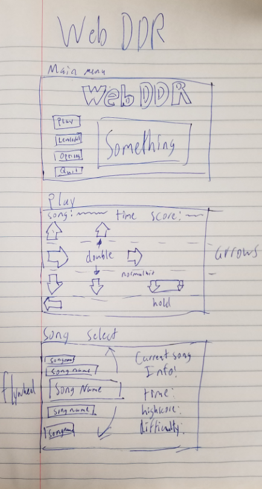

Web DDR
I. High Concept
It’s Dance Dance Revolution, but you use your fingers!
II. Genre
Rhytm, Music, Exergaming
III. Platform
Desktop
IV. Story
You’re dancing for your own enjoyment with your fingers.
V. Esthetics
8-Bit graphics of arrows darting across screen. Sounds that aren’t the music will also be 8-bit.
There will be music playing to play along to, how well you hit each arrow, and victory / failure sounds.
VI. Gameplay
Mechanics
The player is able to hit the four arrow keys (or WASD) to the beat of the song, simulating playing alongside it.
Control
Keyboard Only, no mouse input of any kind
The player can select a song, and then play along to it using WASD and the arrow keys (possible multiplayer implementation).
Teaching the game/New user experience aka "Onboarding"
The game will have an easier song to learn the game on, and a few songs of varying difficulty
Player learning
The player will learn as they continue to play varying difficulties of songs
The player’s score will be determined by the accuracy of their key presses when arrows pass by.
To get the best score, the player will have to get better and better at the game.
VII. Screenshots
VIII. Other
We may end up using some kind of music/8-Bit library for sounds and music, but other than that it will be all created by us.
We may implement both multiplayer, a level creator, and a server connection to store completed songs online depending on how long it takes to create the base of the game.
IX. About the developer(s)
Coehl Gleckner | Game Design and Development | 3rd Year | Game design, gameplay programming, photoshop
Dakota Sorenson | Game Design and Development | 3rd Year | Software development, programming, web development